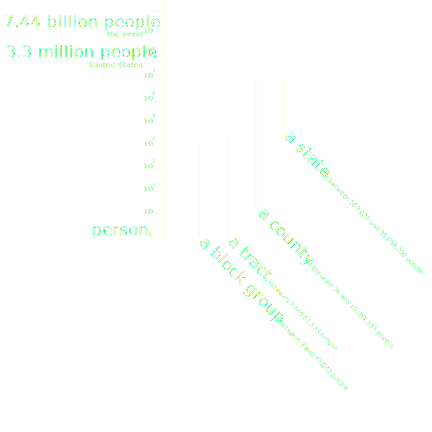

There are a lot of differences between scales in distance and scales in population, this is evident through the frames that are created at each power as the map zooms out. Each time play button is pressed, the map will zoom out and back into one of 1000 most populous cities in the U.S.. A example of an animation sequence below.
Census geographies used in this map are nested, and include "block group", "tract", and "county".
Calculations of areas are approximate use geographical polygons that appear on screen. For example, if any portion of a census tract area apears on screen, then the entire tract is included in the calculations of data. Population of United States is 323 million, the population shown on this map does not include Alaska(0.74m), Hawaii(1.4m), and Puerto Rico(3.4m).
Calculations of population, education, and birth place are based on the 2012 - 2016 5 year estimate of the American Community Survey provided by socialexplorer.com. The data export reference is R11580906.